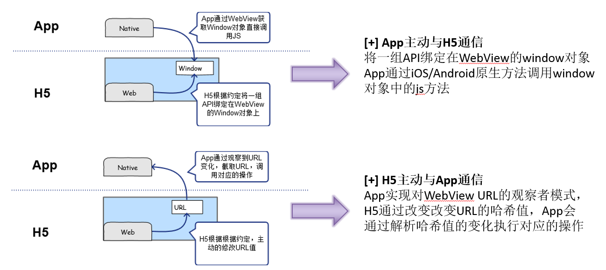

----Worker
1. Dedicated Worker： 只能被创建它的 JS 访问，创建它的页面关闭，它的生命周期就结束了。
2. Shared Worker：共享的 worker，可以被同一域名下的 JS 访问，关联的页面都关闭时，它的生命周期就结束了。
3. ServiceWorker：是事件驱动的 worker，生命周期与页面无关
所以 dedicated worker 和 shared worker 专注于解决“耗时的 JS 执行影响 UI 响应”的问题，而 service worker 则是为解决“Web App 的用户体验不如 Native App”的普遍问题而提供的一系列技术集合，必然部分处理逻辑会牵扯到 UI 线程，从而在启动 service worker 的时候，UI 线程的繁忙也会影响其启动性能。
----Node.js 多进程
child_process 模块来创建子进程，
exec - 使用子进程执行命令
spawn - 使用指定的命令行参数创建新进程。
Fork -是 spawn()的特殊形式, fork会在父进程与子进程之间，建立一个通信管道，用于进程之间的通信
----缓存
· request 里含有 if-modified-since，它的值是上一次请求`
response发来的last-modified
· 还会提供一个If-None-Match请求头,值为服务器上次返回的ETag响应头的值
Cache-Control
“no-cache”和“no-store”
“public”与“private”
如果响应被标记为“public”，则即使它有关联的 HTTP 身份验证，甚至响应状态代码通常无法缓存，也可以缓存响应。大多数情况下，“public”不是必需的，因为明确的缓存信息（例如“max-age”）已表示响应是可以缓存的。
相比之下，浏览器可以缓存“private”响应。不过，这些响应通常只为单个用户缓存，因此不允许任何中间缓存对其进行缓存。例如，用户的浏览器可以缓存包含用户私人信息的 HTML 网页，但 CDN 却不能缓存。
“max-age”
----XMLhttprequest
var req = new XMLHttpRequest();
req.open('GET', url);
req.send();
req.onload = function (){};
req.onerror = function (){};
----模块化
模块化是指在解决某一个复杂问题时，依照一种分类的思维把问题进行系统性的分解以之处理。模块化是一种处理复杂系统分解为代码结构更合理，可维护性更高的可管理的模块的方式。可以想象一个巨大的系统代码，被整合优化分割成逻辑性很强的模块时，对于软件是一种何等意义的存在。对于软件行业来说：解耦软件系统的复杂性，使得不管多么大的系统，也可以将管理，开发，维护变得“有理可循”。
----Web安全
XSS 跨站脚本攻击
反射型、保存型
CSRF 跨站请求伪造
跨站点请求伪造才是跨站伪造的重点内容，攻击者只需要创建一个看似无害的网站，致使受害者的浏览器直接向易受攻击的服务器提交一个请求，执行恶意代码。
完成一次CSRF攻击，受害者必须依次完成两个步骤：
1.登录受信任网站A，并在本地生成Cookie。
2.在不登出A的情况下，访问危险网站B。
----项目中使用过哪些优化方法
合并脚本和样式表，CSS Sprites
开启GZip，精简JavaScript，移除重复脚本，图像优化
开启CDN，使用外部JavaScript和CSS，添加缓存，
减少DNS查找， 使AjaX可缓存
将样式表放在顶部，将脚本放在底部
避免CSS表达式，避免重定向
----语义化
语义化的含义就是用正确的标签做正确的事情，html语义化就是让页面的内容结构化，便于对浏览器、搜索引擎解析；在没有样式CCS情况下也以一种文档格式显示，并且是容易阅读的。 利于 SEO。开发人员代码的人对网站更容易将网站分块，便于阅读维护理解。
----input 和 textarea 的区别
input
可以指定 type 为 url, email, 检测用户输入。还是指定为 file, submit, button, checkbox, radio, datetime, color等，改变input的样式和行为。
textarea
可以输入多行文字
输入值初始化需要用标签对包裹
宽高能用rows, cols 指定
----HTML5新增了哪些内容或API
API
canvas,Service Worker,拖放Drag,history,
sessionStorage & localStorage,IndexedDB
标签
section, video, audio, footer, header, nav, mark, datalist
----CSS3
@font-face 字体
border-radius 圆角, box-shadow text-shadow 文本和框的阴影
background-size, background-origin, border-image, box-sizing, calc, linear-gradient 等等
transform 转换
2D 转换
rotate 旋转，translate 位置移动，scale
3D 转换
rotate(XYZ) 根据x,y,z轴旋转，translate(XYZ), scale(XYZ) 同理
perspective 透视
transition: 过渡，简单的动画（如：移个位置，变个长短）
animation: 动画，3D可以调用硬件渲染。
新的长度单位：rem， ch，vw，vh，vmax，vmin 等。
flex: flex布局
伪类选择器：如::target, :enabled, :disabed, :first-child, last-child
@media 媒体查询，适用于一些响应式布局中
----1像素边框问题
有些屏幕是2倍屏，移动端上设置1px就是看上去的2px。
解决方法：
通过transform将宽度缩小一半，transform:scaleY(0.5)
通过@media媒体查询，查询当前设置的屏幕倍率，统一设置transform
设置屏幕宽度为设计的尺寸。
----VUE源码
1.利用Object.defineProperty里的set和get方法，通过Observer构造函数去遍历要监听的数组和对象
2.通过Dep构造函数完成一个订阅发布者模式
3. 当某个数据属性被用到时，触发 getter，这个属性就会被作为依赖被 watcher 记录下来。
4. 整个函数被渲染完的时候，每一个被用到的数据属性都会被记录。
5. 相应的数据变动时，例如给它一个新的值，就会触发 setter，通知数据对象对应数据有变化。
6. 此时会通知对应的组件，其数据依赖有所改动，需要重新渲染。
7. 对应的组件再次调动渲染函数，生成 Virtual DOM，实现 DOM 更新。
设计模式
将不变的部分和变化的部分隔开是每个设计模式的主题。
单例模式
定义：保证一个类仅有一个实例，并提供一个访问他的全局访问点
策略模式
定义：定义一系列的算法，把它们一个个封装起来，并且使他们可以互相替换，目的是将算法的使用和算法的实现分离出来
用途：缓动函数，表单校验
代理模式
定义：代理模式为一个对象提供一个替代品，目的是为了控制对该对象的访问。
虚拟代理，缓存代理
用途：图片延迟加载，缓存异步请求，缓存大规模的计算
迭代器模式
定义：提供一种方法按顺序访问对象中的各个元素。
内部迭代器：forEach, 外部迭代器：Iterators3
观察者模式
定义：又叫做发布订阅模式，它定义了一种对象间的一对多的依赖关系，一个对象的状态发生变化，所有依赖它的对象都将得到通知。优点，时间上的解耦，对象之间的解耦
模板方法模式
定义：模板方法模式由两部分组成，第一部分是父类，第二部分是子类，父类承担了子类的一些通用的算法，方法 的执行顺序等，子类可以继承父类进行重写。
命令模式
定义：它会作为一个方法实现对象和一个方法调用对象中间的抽象层。
装饰者模式
定义：这个模式允许我们不通过子类继承的方式给对象添加新功能
工厂模式
定义：定义一个工厂类，它可以根据参数的不同返回不同类的实例，被创建的实例通常都具有共同的父类。
职责链模式
定义：这个模式会解耦一个请求的发送者(sender)和接收者(receiver)。这是通过一个对象链完成的，每一个对象本身都可以处理这个请求或将其传递到下一个对象。
用途：DOM的事件处理用了一个责任链
----当输入url时发生了什么
1.DNS 查询
浏览器检查缓存和host是否记录，没有的话查询DNS服务器
2. HTTP传输
HTTP 要传送一条报文时，会以 TCP 连接按序传输。TCP 收到数据流之后，会将数据流砍成小数据块，并将段封装在 IP 分组中，通过因特网进行传输。
每个 TCP 段都是由 IP 分组承载，从一个 IP 地址发送到另一个 IP 地址的。每个 IP分组中都包括:
- 一个IP分组首部(通常为20字节);
- 一个 TCP 段首部(通常为 20 字节);
- 一个 TCP 数据块(0 个或多个字节)。
IP 首部包含了源和目的 IP 地址、长度和其他一些标记。TCP 段的首部包含了 TCP端口号、TCP 控制标记，以及用于数据排序和完整性检查的一些数字值。
TCP 连接握手需要经过以下几个步骤。
(1) 请求新的 TCP 连接时，客户端要向服务器发送一个小的 TCP 分组(通常是 40 ~60 个字节)。这个分组中设置了一个特殊的 SYN 标记，说明这是一个连接请求。
(2) 如果服务器接受了连接，就会对一些连接参数进行计算，并向客户端回送一个TCP 分组，这个分组中的 SYN 和 ACK 标记都被置位，说明连接请求已被接受
(3) 最后，客户端向服务器回送一条确认信息，通知它连接已成功建立。
为什么：为了防止失效的连接请求报文段突然又传送到了服务端，因而产生错误。
四次分手
第一次分手：A向B发送一个FIN报文段，然后A进入等待的状态，表示A没有数据要发送给B了；
第二次分手：B收到A发送的FIN报文段后向A回一个ACK报文段代表同意A发送的关闭请求
第三次分手：B向A发送FIN报文段，请求关闭连接
第四次分手：A收到B发送的FIN报文段，向B发送ACK报文段，B收到A的ACK报文段以后，就关闭连接；A等待没有收到回复，则证明B已关闭，A也可以关闭连接了。
3.HTTPS握手
4.缓存
5.服务器处理
6.解析
解析整个HTML，得到DOM树和样式树
DOM树和样式树，经过渲染，得到一颗渲染树
根据渲染树，开始布局，计算各个节点宽度，位置，高度等
然后开始绘制整个页面并显示
在渲染过程中如果使用了GPU，还可以进行GPU渲染
7.解析js
task 源
DOM 操作任务源：如元素以非阻塞方式插入文档
用户交互任务源：如鼠标键盘事件。用户输入事件（如 click）
网络任务源：如 XHR 回调
history 回溯任务源：使用 history.back() 或者类似 API
此外 setTimeout、setInterval、IndexDB 数据库操作等也是任务源。总结来说，常见的 task 任务有：
microtask 包括：
Promise.then
MutationObserver
Object.observe
process.nextTick
hybrid

栅格化布局和弹性布局
栅格化布局优点
能提高网页的规范性，提高开发速度和减少维护成本。在栅格系统里面，页面中所有组件的尺寸都是有规律的。这对一些大型网站的开发和维护来说，是非常好的。
基于栅格进行设计，可以让整个网站各个页面的布局保持一致。
栅格化布局缺点
牺牲了部分的灵活性
栅格化布局对比弹性布局
他俩都很不错，是可以同时使用的。
1. 栅格化布局更适合建设大的页面，可以很容易的管理页面中的组件的尺寸和布局。
2. flex更适合将内部的内容按照想要的方式对齐，适合比较小的细节比较多的模块。
3. flex比较适合一行或者一列的布局
4. flex对浏览器的兼容性有要求。
webpack插件
首先，定义一个函数，用户可以传入一个option对象
然后，需要设一个func.prototype.apply函数。这个函数是提供给webpack运行时调用的。webpack会在这里注入compiler对象。
BFC
BFC 是指一个独立的块级渲染区域，只有Block-level Box参与，该区域拥有一套渲染规则来约束块级盒子的布局，且与区域外部无关。
float的值不为none；
overflow的值不为visible(可以为hidden,scroll,auto)；
display的值为inline-block,table-cell,table-caption,flex,inline-flex中的任何一个；
position的值为absolute,fixed(不为static,relative中的任何一个)；
作用
1.自适应两栏布局
2.清除内部浮动
3.防止垂直 margin 重叠